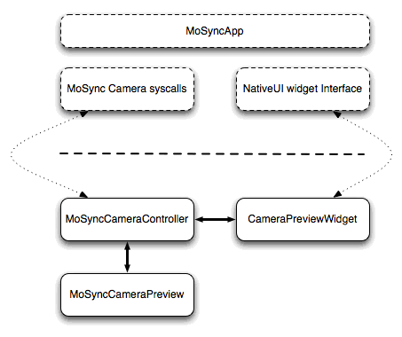

In this tutorial we take a look at how to control a device's cameras through the MoSync Camera C API. With the Camera C API you can discover the number of cameras a device supports, set properties like zoom and image format, embed previews in your application, and, of course, take a picture.
MoSync's Camera C API lets you take full controll of a device's cameras on the platforms it supports (see Feature/Platform Support). One of the major aspects of our implementation is the ability to use the camera preview as a NativeUI widget that can be controlled through the Widget API.
We also have an example application for you to look at, CameraDemo, that demonstrates some of the basic principles described here.
Here are the list of the syscall functions in the Camera C API:
The recommended way of using the new Camera API is together with Widget API. To use the camera together with the Widget API follow these steps:
1. Get the number of available cameras on the device by calling maCameraNumber.
2. Add an instance of MAW_CAMERA_PREVIEW to your application with maWidgetCreate.
3. Set the widget parameters (only width and height are recommended).
4. Select one of the cameras by calling maCameraSelect:
maCameraSelect(MA_CAMERA_CONST_BACK_CAMERA);
5. Bind the preview and the camera by calling maCameraSetPreview so that the camera uses that preview for its live view.
void createCameraWidget ()
{
mCameraPreview = maWidgetCreate(MAW_CAMERA_PREVIEW);
widgetSetPropertyInt(
mCameraPreview,
MAW_WIDGET_WIDTH,
MAW_CONSTANT_FILL_AVAILABLE_SPACE);
widgetSetPropertyInt(
mCameraPreview,
MAW_WIDGET_HEIGHT,
MAW_CONSTANT_FILL_AVAILABLE_SPACE);
// Bind the widget to the selected camera.
maCameraSetPreview(mCameraPreview);
maWidgetAddChild( mMainLayoutWidget, mCameraPreview);
}
6. Check the available functionality on the device’s camera (zoom support, flash support, etc.) by calling maCameraGetProperty.
char buffer[256];
maCameraGetProperty(MA_CAMERA_FLASH_SUPPORTED, buffer, 256);
7. Start the camera by calling maCameraStart.
8. Change the properties as required by calling maCameraSetProperty.
9. Call maCameraSnapshot to take snapshots. Here is an example function that takes a picture snapshot and store the image data in using a place holder called mLastImage.
void takeSnaphot()
{
// Destroy image object if there is a previous snapshot made.
if (mLastImage)
{
maDestroyPlaceholder(mLastImage);
}
// Create new placeholder for image and take snapshot.
mLastEnc = maCreatePlaceholder();
int result = maCameraSnapshot(mCurrentSizeIndex, mLastOmage);
if (result != MA_CAMERA_RES_OK)
{
maPanic(result, "Failed to takeSnapshot");
}
}
10. Call maCameraStop to stop the camera when you are finished with it.
11. Destroy the Widget if required.
Camera properties can be set and read through the maCameraSetProperty and maCameraGetProperty functions:
Read/Write:
Read Only:
For more details about these functions, see the MoSync API Reference Manual.

Here is an example program that displays a camera preview widget and a button that currently does nothing (it could be used to take a smapshot, for instance).
#include <ma.h>
#include <mavsprintf.h>
#include <MAUtil/Moblet.h>
#include <NativeUI/Widgets.h>
#include <NativeUI/WidgetUtil.h>
using namespace MAUtil;
using namespace NativeUI;
/**
* Simple test application for the Camera API.
* Displays a camera preview widget and a button
* that currently has no functionality.
*/
class SimpleCameraMoblet :
public Moblet,
public FocusListener,
public ButtonListener
{
public:
/**
* The constructor creates the user interface.
*/
SimpleCameraMoblet()
{
createFocusListener();
createUI();
startCameraPreview();
}
/**
* Destructor.
*/
virtual ~SimpleCameraMoblet()
{
// Deleting the parent widget deletes all child widgets.
delete mScreen;
}
void createFocusListener()
{
addFocusListener(this);
}
void focusLost()
{
maCameraStop();
}
void focusGained()
{
maCameraStart();
}
void createUI()
{
// Create a NativeUI screen that will hold layout and widgets.
mScreen = new Screen();
// Create a Vertical Layout that will hold widgets.
mLayout = new VerticalLayout();
mLayout->fillSpaceHorizontally();
mLayout->fillSpaceVertically();
// Create Camera Preview.
mCameraPreview = new CameraPreview();
mCameraPreview->fillSpaceHorizontally();
mCameraPreview->fillSpaceVertically();
mLayout->addChild(mCameraPreview);
// Create a button.
mButton = new Button();
mButton->setText("Press Me");
mButton->fillSpaceHorizontally();
mButton->wrapContentVertically();
mButton->addButtonListener(this);
mLayout->addChild(mButton);
// Add the layout to the screen.
mScreen->setMainWidget(mLayout);
// Show the screen.
mScreen->show();
}
void startCameraPreview()
{
maCameraSelect(0);
mCameraPreview->bindToCurrentCamera();
maCameraStart();
}
void keyPressEvent(int keyCode, int nativeCode)
{
if (MAK_BACK == keyCode || MAK_0 == keyCode)
{
maCameraStop();
close();
}
}
void buttonClicked(Widget* button)
{
((Button*) button)->setText("This button does nothing");
}
private:
Screen* mScreen;
VerticalLayout* mLayout;
Button* mButton;
CameraPreview* mCameraPreview;
};
/**
* Main function that is called when the program starts.
*/
extern "C" int MAMain()
{
Moblet::run(new SimpleCameraMoblet());
return 0;
}